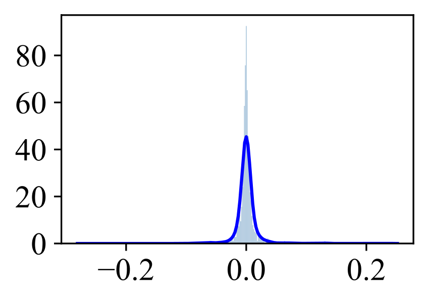

Abstract
Quantizing a floating-point neural network to its fixed-point representation is crucial for Learned Image Compression (LIC)
because it assures the decoding consistency for interoperability and reduces space-time complexity for implementation.
Existing solutions often have to retrain the network for model quantization which is time-consuming and impractical.
This work suggests the use of Post-Training Quantization (PTQ) to process pretrained, off-the-shelf LIC models directly.
We theoretically prove that minimizing the mean square error (MSE) of model parameters (e.g., weight, bias, and activation)
in PTQ is sub-optimal for compression tasks and thus develop a novel Rate-Distortion (R-D) Optimized PTQ (RDO-PTQ)
to best retain the compression performance. Given a LIC model, RDO-PTQ layer-wisely determines the quantization factors
to transform the original 32-bit floating-point (FP32) parameters to the 8-bit fixed-point (INT8) precision,
for which a tiny calibration image set is compressed in optimization to minimize R-D loss.
Experiments reveal the outstanding efficiency of the proposed method on different LICs, showing the closest coding performance
to their floating-point counterparts. And, our method is a lightweight and plug-and-play approach without any need
for model retraining which is attractive to practitioners. Such an RDO-PTQ is a task-oriented PTQ scheme,
which is then extended to quantize popular super-resolution and image classification models with negligible performance loss,
further evidencing the generalization of our methodology.
Learned Image Compression
The diverse channel distributions of the layer

The diverse channel distributions.
Because of diverse channel distribution of the layer,
layer-wise quantization will degrade quantization seriously.
Channel-wise quantization is a better choice.
Evaluations on Kodak and Tecnick
R-D Performance in 8-bit.
R-D Performance in 10-bit.
Preprint Paper
BibTeX Citation
@article{shi2022rate,
title={Rate-Distortion Optimized Post-Training Quantization for Learned Image Compression},
author={Shi, Junqi and Lu, Ming and Chen, Fangdong and Pu, Shiliang and Ma, Zhan},
journal={arXiv preprint arXiv:2211.02854},
year={2022}
}